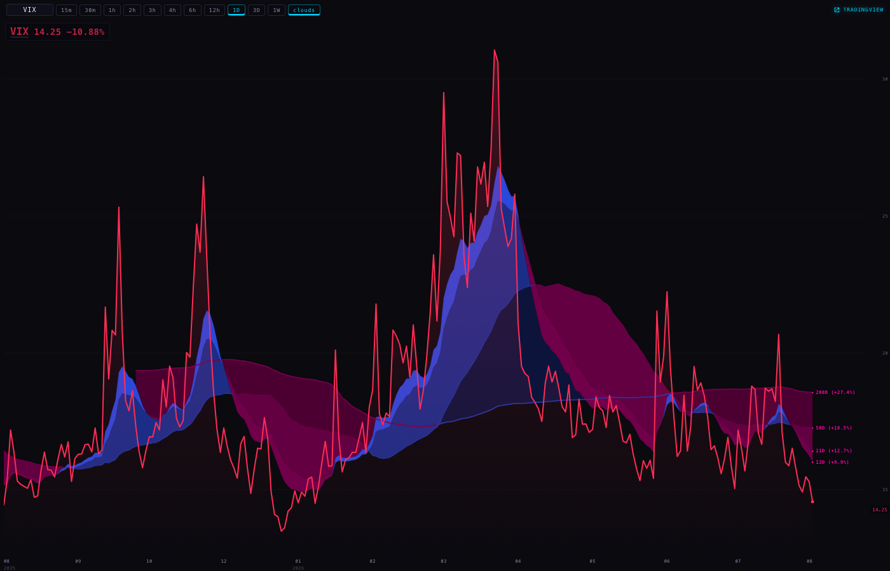
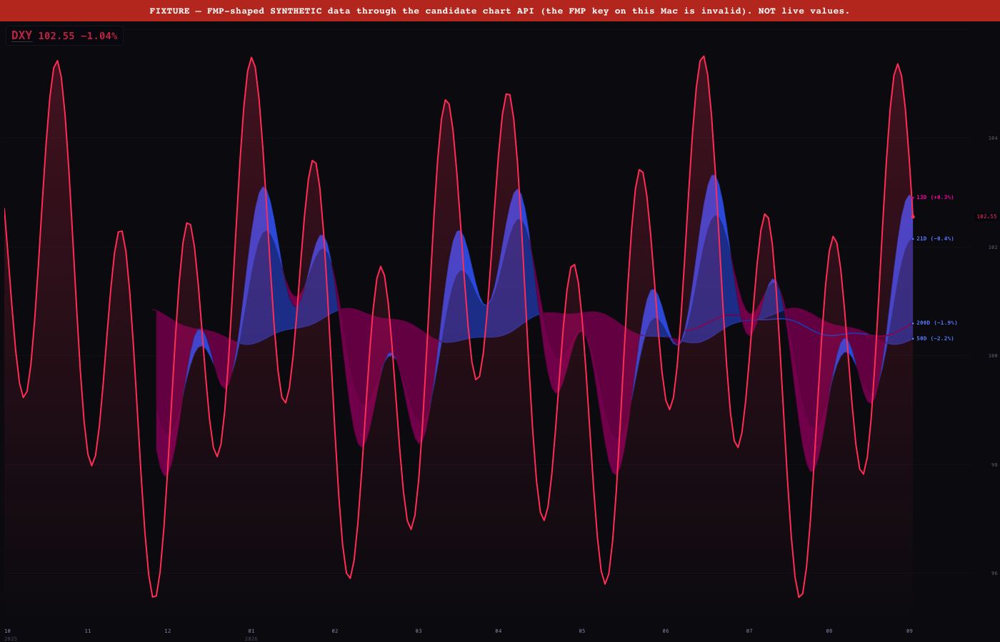
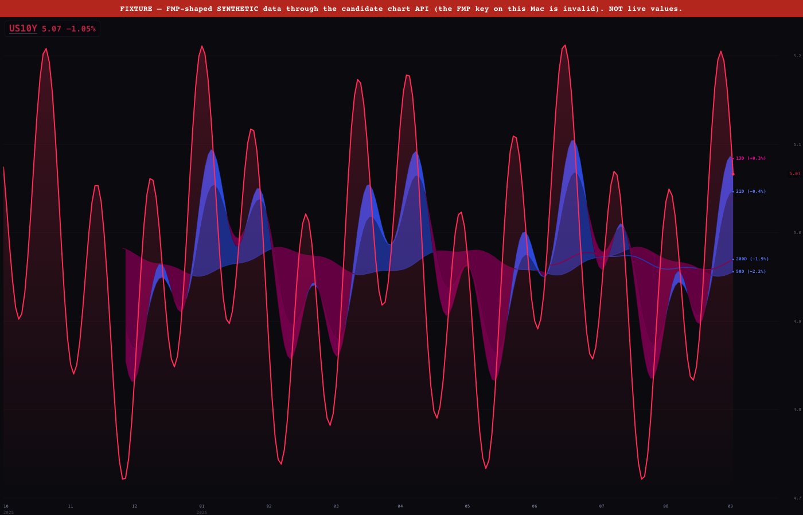
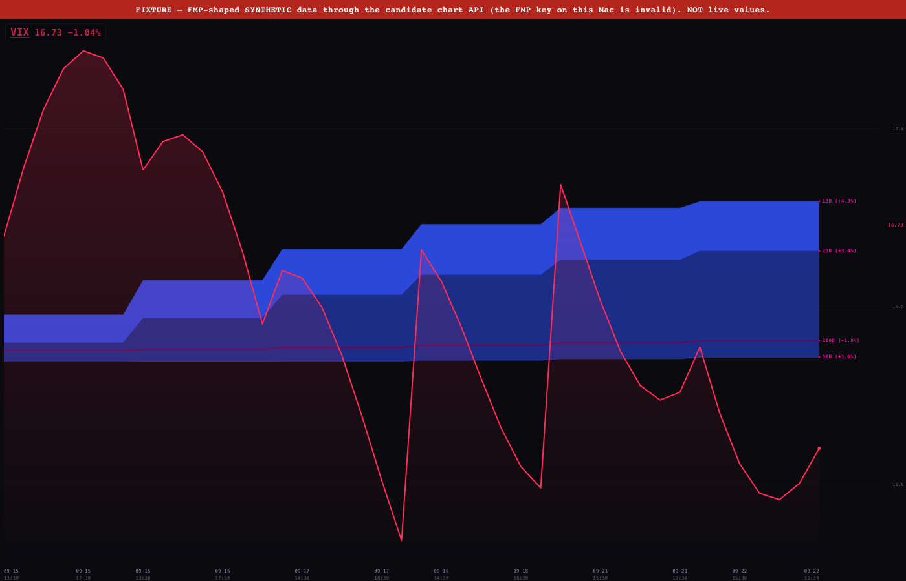
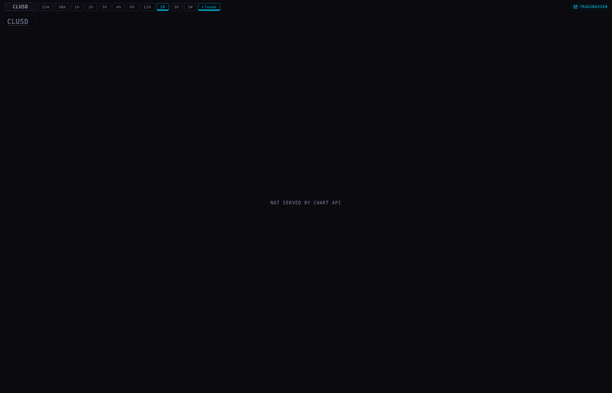
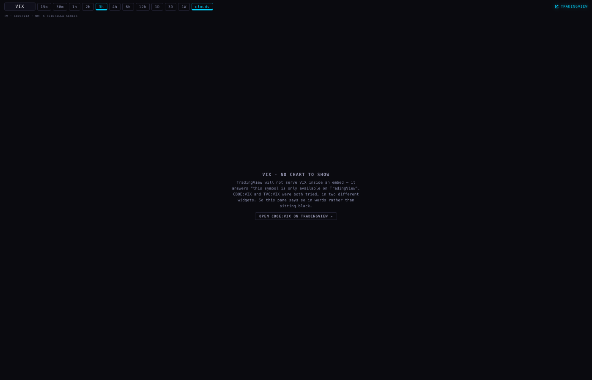

ONE SOURCE — VIX, DXY and the 10-year through the chart API; the Station's Supabase price path closed
Worker: Claude Fable 5.1 · Urth Claude Max · 2026-09-22 evening (ET) · brief sha256 c7c5ca3d… · nothing deployed, nothing pushed, no database written, no credential printed.
UNABLE — no valid FMP key on this Mac (~/.config/fmp.env answers HTTP 401 "Invalid API KEY"; no other key exists locally; the FMP MCP connector named in the brief is not present in this session) → workaround: the whole path was built and proven end to end against an FMP-shaped synthetic fixture served locally, through the real writer, a local R2 emulator, the real candidate chart API and the real Station page in a real browser. Every "after" screenshot below wears a red FIXTURE banner. No live FMP value was fetched; the "real current value and today's change" in the brief could not be shown. The production refresh reads the key from the batch service environment; the coordinator's deploy steps below set it.
1 · The VIX pane, before and after

BEFORE — Station @ origin/station/tonight-20260922 (de95670), real reads. Badge measured in the DOM: "VIX 14.25 −10.88% · last close 15.99 · quote as of Aug 14 · Aug 27, 2025 – Aug 11 · through Aug 11". The line ends in August under a live-styled badge. The rig also caught two attempts to open wss://…supabase.co/realtime from this pane — the side door in action.AFTER — station/one-source-20260922 against the candidate chart API. Badge: "VIX 16.73 −1.04% · Sep 21 close 16.90 · Oct 16, 2025 – Sep 22" (FIXTURE values). Quote title: provider quote · 2026-09-22T04:00:00.000Z — the value is stamped with its session, never this machine's clock. Network during the page: /universe, /macro?symbols=VIX, /candles?symbol=VIX&tf=D… and nothing else. Zero requests to Supabase; zero sockets. Ownership verified: sha256 over the 364 returned symbols equals the pinned accepted universe digest.
station-shells/chart-v1/index.html (the file the deck mounts) — byte-identical to chart/index.html (cmp clean, pinned by test) and renders the same.
2 · DXY and the 10-year drawing through the same route

DXY — API response: provider:"FMP", provider_symbol:"DX-Y.NYB", surface:"FMP_HISTORICAL_PRICE_EOD_FULL", price_basis:"PROVIDER_INDEX_LEVEL". Badge "DXY 102.55 −1.04% · last close 103.63" (FIXTURE).

US10Y — provider_symbol:"^TNX", price_basis:"PROVIDER_YIELD_PERCENT". Badge "US10Y 5.07 −1.05% · last close 5.12" (FIXTURE). The USDX trap (an ETF on FMP) is excluded by the contract and pinned by test.

VIX · 1h — intraday where FMP publishes it (surface:"FMP_HISTORICAL_CHART_1HOUR", tail-only, completed bars only).
3 · Absence is loud

CLUSD (crude, formerly a Supabase non-equity) — the chart API does not carry it: "NOT SERVED BY CHART API" in words, both lanes (historyAbsence and quoteAbsence = NOT_SERVED_BY_CHART_API). No line, no badge value, no retry loop.

VIX · 3h — FMP publishes 1m/5m/15/30/60/240/D only; the API refuses FMP_INTERVAL_NOT_SERVED (404, named). The pane records the name (VIX|180 → FMP_INTERVAL_NOT_SERVED) and falls to its existing worded VIX panel. Nothing is composed from 1h bars — the standing "never compose" rule. See §7: the deck's default range is 3h, so this is a product decision for Alan.
A series that stops is refused the same way: macroServingDecision answers FMP_MACRO_SERIES_STALE / FMP_MACRO_STALE_25_SESSIONS for an Aug-14 series on Sep 22 (pinned by test, with the NYSE calendar), carrying the last refresh receipt's state and detail. A failed refresh never overwrites the last good object; it writes a receipt, and the reader says so.
4 · What changed
Repo / branch
Commit
Files
scintilla-provider-massive · chart-api/fmp-macro-series-20260922 (worktree _worktrees/fmp-macro-20260922) from 3fea526 — the lineage the bar service runs (CODE_COMMIT=3fea526…) and the chart API's current release v56 sits on
633b38a
services/rest-accel/fmp-macro-contract.mjs (new, pure) · services/rest-accel/fmp-macro-refresh.mjs (new, the one writer) · services/rest-accel/bar-service.mjs (+/acquire-macro, /refresh-macro) · services/rest-accel/provider-tail-refresh-scheduled.mjs (macro reconcile after the Massive tail) · services/chart-api/server.mjs (macro branch in /candles, new /macro) · services/chart-api/Dockerfile · tests: fmp-macro-contract, fmp-macro-refresh, packaging-closure (list updated deliberately)
scintilla-widgets · station/one-source-20260922 from origin/station/tonight-20260922 @ de95670
see RESULT.json
chart/index.html + station-shells/chart-v1/index.html (Supabase script, URL, anon key, pg reader, "lq" realtime channel removed) · deck/index.html (database client and station-deck-lq channel removed; pg() kept for favourites and the canonical ticker list only) · _provider/provider.js (macro symbols → /candles and /macro; non-equity quote/candle lanes retired by name; identity by payload digest; named 404 absences) · 8 tests updated, 1 new (station-one-source) · this deliverable
Tests. Chart API: 18 new tests, offline; repo suite 451 tests with the closure list updated. Station: 373 tests, 20 failures — the identical 20 that fail on de95670 before any change (diffed by name), 61/61 in the touched files. Proof runs: proof-results-before.json, proof-results-after.json, local-api-probes.txt, local-refresh-run.log beside this file.
5 · The one path
FMP (^VIX · DX-Y.NYB · ^TNX)
└─ bar service (batch app, the existing credentialed acquisition boundary) — the ONE writer
fmp-macro-refresh.mjs → normalized/fmp_provider_bars_v1/{tf}/{SYM}.json.gz (+ _refresh/{SYM}.json receipt)
· on demand: chart API asks /acquire-macro when an object is missing or behind
· on schedule: provider-tail-refresh-scheduled runs the macro set after the Massive tail
· structurally unable to write into any Massive namespace; key from env only; byte ceiling
└─ chart API (public reader, no credential) — /candles?symbol=VIX|DXY|US10Y provider:"FMP", provider_symbol stated
/macro → badge value = last completed close vs the session before, stamped with its session
stale / missing / failed / unsupported width → 404/503 WITH a name, never a line
└─ Station — SC_PROVIDER.marketCandles / marketQuotes → the chart API and nowhere else for prices
6 · Every place the Station still reads anything that is not the chart API
Runtime pages on the branch (tests, proofs and vendored files excluded). No page loads the database client; no realtime channel is opened anywhere. Table reads that remain, by file:
File
Tables
Price?
pulse/index.html
vix_term
YES — VIX term structure. Out of this brief's scope (chart pane + twin) but it is market data from Supabase. Next candidate for the same route (FMP carries the VIX futures curve).
_provider/provider.js
provider_indicators_current (FMP daily indicators), composite_staged (non-equity Geiger), tickers (canonical set, only when a page binds a reader)
indicators and scores, not prices; identity now proves by digest when no reader is bound (the chart pane)
deck/index.html
hub_favorites, tickers
no
heat/index.html
company_profile, sector_rankings
no
visuals/geiger-live/index.html
fan_cohort_daily, fan_daily, tickers
no (Geiger fan)
geiger/index.html
board_volume, hub_favorites, operator_weights
no
alerts feed_alerts · cohorts hub_favorites · compare session_continuity · econ econ_dashboard · events earnings_events · news news_sentiment · scenes, tv scene_layouts · wall hub_favorites · youtube youtube_feed, yt_watch_later · pane-video and the three video shells yt_positions, yt_watch_later
no
7 · For the coordinator — deploy by digest, then verify
Source digest: chart API commit 633b38a6ee655a4dfec6b78bccdede1f4a5beef1 (parent 3fea526). The image digest exists only after the build; --image-label ties it to the commit and /live reports identity.git_commit.
# in the chart API repo worktree
cd "/Users/alanharvey/SCINTILLA 0.5/_worktrees/fmp-macro-20260922"
# 1 · batch app image (bar service + scheduled tail): build and push only, no machine moves
fly deploy -a scintilla-massive-stocks-batch -c batch.fly.toml --build-only --push \
--image-label fmp-macro-633b38a --build-arg CODE_COMMIT=633b38a6ee655a4dfec6b78bccdede1f4a5beef1
# 2 · the FMP key, from the coordinator's own store, staged (no restart, never on this worker's screen)
fly secrets set FMP_API_KEY=… -a scintilla-massive-stocks-batch --stage
# 3 · re-point the bar service (the one writer + the on-demand path) at the new image
fly machine update 82d1d96a326548 -a scintilla-massive-stocks-batch \
--image registry.fly.io/scintilla-massive-stocks-batch:fmp-macro-633b38a --yes
# optional, same image for the hourly tail machine when its schedule is restored (P0, separate):
# fly machine update 781329f9354378 -a scintilla-massive-stocks-batch --image registry.fly.io/scintilla-massive-stocks-batch:fmp-macro-633b38a --yes
# 4 · chart API (public reader; repo-root build context, as its Dockerfile states)
fly deploy -a scintilla-massive-chart-api -c services/chart-api/fly.toml \
--build-arg GIT_COMMIT=633b38a6ee655a4dfec6b78bccdede1f4a5beef1 --image-label fmp-macro-633b38a
# 5 · verify (read-only)
curl -s https://scintilla-massive-chart-api.fly.dev/live | python3 -m json.tool | grep -A3 identity
curl -s https://scintilla-massive-chart-api.fly.dev/macro # state CURRENT + quote per symbol
curl -s "https://scintilla-massive-chart-api.fly.dev/candles?symbol=VIX&tf=D&limit=3" # provider FMP, ^VIX
curl -s "https://scintilla-massive-chart-api.fly.dev/candles?symbol=US10Y&tf=60&limit=3"
# first read of each symbol/width acquires through the bar service (on_demand.ok:true), then serves from R2
# 6 · Station (not pushed by this worker)
git -C "/Users/alanharvey/SCINTILLA 0.5/_worktrees/station-one-source-20260922" push -u origin station/one-source-20260922
8 · Limits, stated
Fixture, not live. No valid FMP key here. The path, shapes, timestamps (Eastern-anchored, completed-only) and refusals are proven; the numbers on the "after" panes are synthetic and say so.
Widths FMP does not publish (2h, 3h, 6h, 12h, 2D, 3D, W, M…) are refused by name. The deck starts on 3h, so VIX/DXY/US10Y panes on the wall will show a worded panel until Alan decides: switch those panes to a served width, or explicitly permit composing them from 1h bars (today's rule forbids composition).
Intraday is tail-only (3–60 days by width); daily is full history with the 5,000-row cap paged backward.
Identity. The chart pane no longer reads the canonical ticker list from Supabase; it recomputes the universe digest over the payload and compares it with the pinned accepted digest (verified against control/CANONICAL_EQUITY_UNIVERSE_20260820.json). The deck still binds its non-price reader and therefore still cross-checks by set; removing that read is one line once Alan accepts the digest path as sufficient.
pulse/vix_term is the one remaining market-data read from Supabase (§6).
The hourly tail machine is still stopped (the open P0). The macro set does not depend on it: the chart API's own read path acquires through the running bar service.